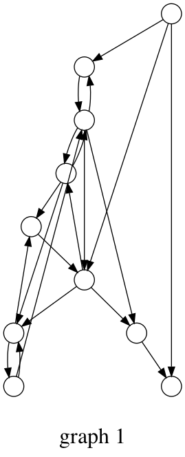
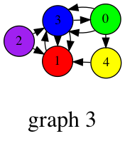
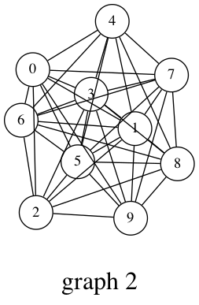

Stanford Network Analysis Package
Contents
Stanford Network Analysis Package¶
import snap
from IPython.display import Image
Data Types¶
G = snap.LoadEdgeList(snap.PNGraph, "../../RepositoryData/data/cit-HepTh.txt")
## Get node degrees
CntV = snap.TIntPrV()
snap.GetOutDegCnt(G, CntV)
for p in CntV:
print("degree %d: count %d" % (p.GetVal1(), p.GetVal2()))
degree 0: count 2711
degree 1: count 2449
degree 2: count 1951
degree 3: count 1657
degree 4: count 1405
degree 5: count 1272
degree 6: count 1172
degree 7: count 1087
degree 8: count 975
degree 9: count 847
degree 10: count 790
degree 11: count 771
degree 12: count 651
degree 13: count 640
degree 14: count 622
degree 15: count 556
degree 16: count 519
degree 17: count 503
degree 18: count 498
degree 19: count 429
degree 20: count 412
degree 21: count 398
degree 22: count 384
degree 23: count 339
degree 24: count 304
degree 25: count 333
degree 26: count 284
degree 27: count 250
degree 28: count 244
degree 29: count 246
degree 30: count 240
degree 31: count 184
degree 32: count 194
degree 33: count 160
degree 34: count 166
degree 35: count 162
degree 36: count 149
degree 37: count 135
degree 38: count 111
degree 39: count 114
degree 40: count 104
degree 41: count 98
degree 42: count 91
degree 43: count 81
degree 44: count 77
degree 45: count 61
degree 46: count 55
degree 47: count 60
degree 48: count 51
degree 49: count 48
degree 50: count 45
degree 51: count 45
degree 52: count 39
degree 53: count 32
degree 54: count 34
degree 55: count 37
degree 56: count 31
degree 57: count 33
degree 58: count 35
degree 59: count 23
degree 60: count 14
degree 61: count 10
degree 62: count 16
degree 63: count 23
degree 64: count 17
degree 65: count 17
degree 66: count 15
degree 67: count 14
degree 68: count 10
degree 69: count 13
degree 70: count 14
degree 71: count 13
degree 72: count 6
degree 73: count 11
degree 74: count 7
degree 75: count 8
degree 76: count 4
degree 77: count 8
degree 78: count 7
degree 79: count 6
degree 80: count 5
degree 81: count 5
degree 82: count 5
degree 83: count 6
degree 84: count 4
degree 85: count 3
degree 86: count 5
degree 87: count 1
degree 88: count 3
degree 89: count 4
degree 90: count 5
degree 91: count 2
degree 92: count 1
degree 93: count 4
degree 94: count 1
degree 95: count 3
degree 96: count 3
degree 97: count 2
degree 98: count 1
degree 99: count 4
degree 100: count 1
degree 101: count 2
degree 102: count 1
degree 103: count 1
degree 104: count 4
degree 106: count 4
degree 107: count 1
degree 108: count 2
degree 109: count 2
degree 112: count 1
degree 115: count 2
degree 120: count 2
degree 121: count 4
degree 122: count 2
degree 123: count 1
degree 124: count 1
degree 125: count 1
degree 126: count 2
degree 134: count 3
degree 135: count 1
degree 136: count 1
degree 139: count 1
degree 142: count 1
degree 143: count 1
degree 146: count 1
degree 149: count 1
degree 154: count 3
degree 156: count 1
degree 157: count 1
degree 158: count 1
degree 159: count 1
degree 160: count 1
degree 165: count 1
degree 167: count 1
degree 169: count 1
degree 170: count 1
degree 175: count 1
degree 177: count 1
degree 180: count 1
degree 181: count 1
degree 198: count 1
degree 200: count 1
degree 201: count 1
degree 207: count 1
degree 211: count 1
degree 212: count 1
degree 214: count 1
degree 216: count 1
degree 226: count 1
degree 246: count 1
degree 263: count 1
degree 274: count 1
degree 289: count 1
degree 302: count 1
degree 359: count 1
degree 562: count 1
print(snap.GetClustCf(G)) # clustering coefficient
print(snap.GetTriads(G))# diameter
print(snap.GetBfsFullDiam(G, 10))
0.3120194958062244
1478735
11
## Betweenness centrality
Nodes = snap.TIntFltH()
Edges = snap.TIntPrFltH()
snap.GetBetweennessCentr(G, Nodes, Edges, 1.0)
# for node in Nodes:
# print("node: %d centrality: %f" % (node, Nodes[node]))
# for edge in Edges:
# print("edge: (%d, %d) centrality: %f" % (edge.GetVal1(), edge.GetVal2(), Edges[edge]))
Graph = snap.GenRndGnm(snap.PNGraph, 10, 20)
Nodes = snap.TIntFltH()
Edges = snap.TIntPrFltH()
snap.GetBetweennessCentr(Graph, Nodes, Edges, 1.0)
for node in Nodes:
print("node: %d centrality: %f" % (node, Nodes[node]))
for edge in Edges:
print("edge: (%d, %d) centrality: %f" % (edge.GetVal1(), edge.GetVal2(), Edges[edge]))
node: 0 centrality: 3.916667
node: 1 centrality: 0.000000
node: 2 centrality: 0.833333
node: 3 centrality: 11.833333
node: 4 centrality: 0.583333
node: 5 centrality: 0.500000
node: 6 centrality: 4.166667
node: 7 centrality: 9.416667
node: 8 centrality: 2.333333
node: 9 centrality: 1.416667
edge: (0, 2) centrality: 7.833333
edge: (0, 3) centrality: 17.166667
edge: (0, 5) centrality: 8.666667
edge: (1, 3) centrality: 10.333333
edge: (1, 8) centrality: 4.000000
edge: (1, 9) centrality: 3.666667
edge: (2, 7) centrality: 13.500000
edge: (3, 6) centrality: 11.666667
edge: (3, 8) centrality: 11.333333
edge: (3, 9) centrality: 6.333333
edge: (3, 7) centrality: 8.500000
edge: (4, 7) centrality: 12.500000
edge: (4, 8) centrality: 7.833333
edge: (5, 6) centrality: 11.333333
edge: (6, 7) centrality: 11.666667
edge: (7, 9) centrality: 9.500000
edge: (8, 9) centrality: 4.166667
snap.PlotClustCf(Graph, "example", "Directed graph - clustering coefficient")
snap.DrawGViz(Graph, snap.gvlDot, "graph.png", "graph 1")
Image('graph.png')

NIdColorH = snap.TIntStrH()
NIdColorH[0] = "green"
NIdColorH[1] = "red"
NIdColorH[2] = "purple"
NIdColorH[3] = "blue"
NIdColorH[4] = "yellow"
Network = snap.GenRndGnm(snap.PNEANet, 5, 10)
snap.DrawGViz(Network, snap.gvlSfdp, "network.png", "graph 3", True, NIdColorH)
Image('network.png')

UGraph = snap.GenRndGnm(snap.PUNGraph, 10, 40)
snap.DrawGViz(UGraph, snap.gvlNeato, "graph_undirected.png", "graph 2", True)
Image('graph_undirected.png')

snap.TintV()`snap.T